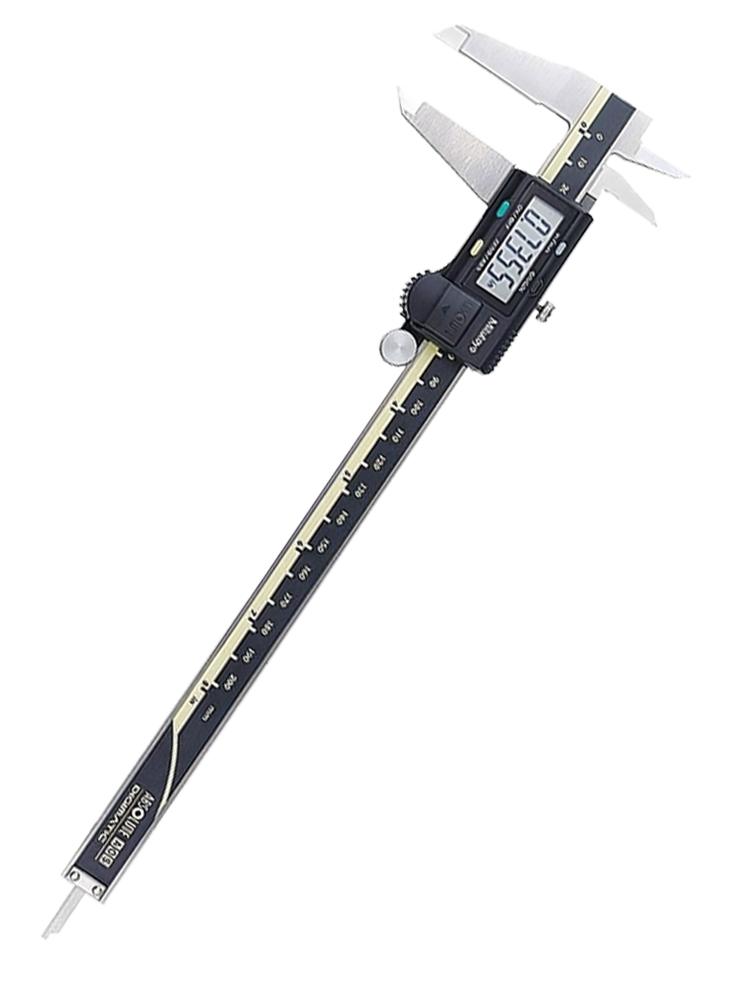
Kevin Castillo 2024. ® Todos los Derechos Reservados.
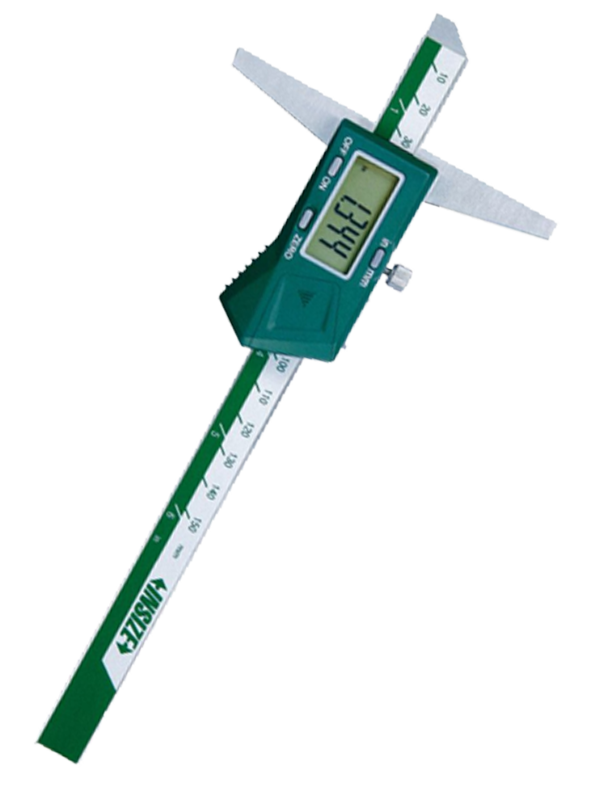
Herramientas
Calibrador Digital de Profundidad
- Código:FAME-LMET-CDP 045
Descripción:
Es un tipo de calibre especial que sirve para medir dimensiones de profundidad en piezas pequeñas, que van desde unos pocos centímetros hasta una fracción de milímetro. El calibre de profundidad, al igual que cualquier otro tipo de calibre o pie de rey consta de una regla con una escuadra en un extremo, sobre la cual se desliza otra regla destinada a indicar la medida y puede apreciar longitudes de 1/10, 1/20 o 1/50 de milímetro.
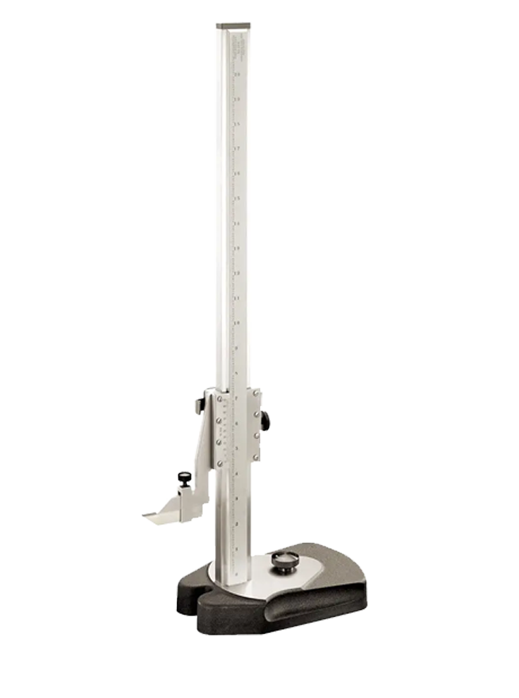
Herramientas
Calibrador de Alturas
- Código:FAME-LMET - CA 058
Descripción:
El gramil o calibrador de altura con vernier es un instrumento de medición y trazado que se utiliza en los laboratorios de metrología y control de calidad, para realizar todo tipo de trazado en piezas como por ejemplo ejes de simetría, centros para taladros, excesos de mecanizado etc. Consta de una columna principal, que está graduada en centímetros y milímetros, por la que se desliza el calibre trazador que lleva incorporado un vernier de precisión. La punta del calibre es de metal duro.
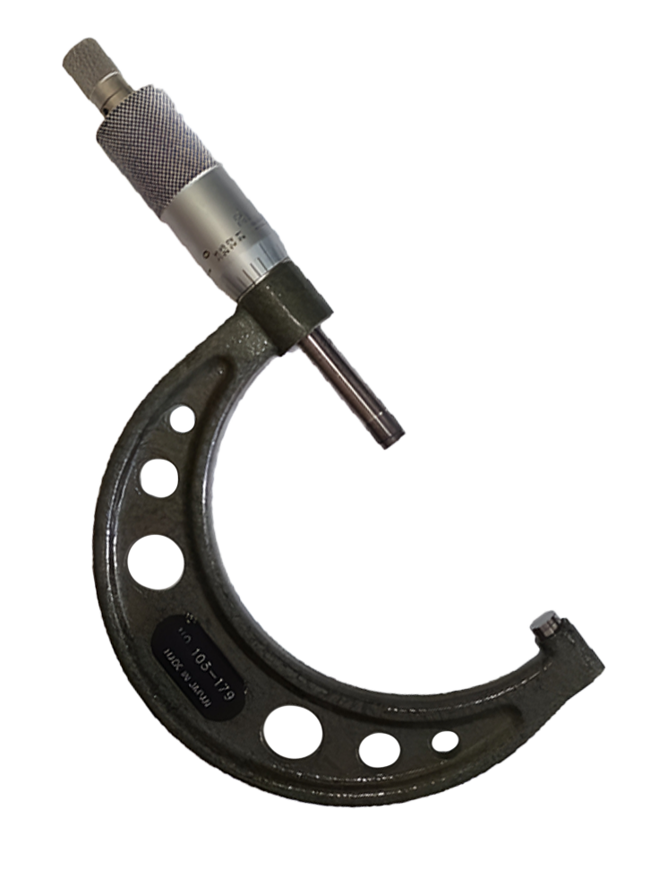
Herramientas
Micrómetro de Exteriores
- Código:FAME-LMET-M060
Descripción:
Este instrumento también es denominado tornillo de Palmer, calibre Palmer o simplemente palmer, es un instrumento de medición cuyo nombre deriva etimológicamente de las palabras griegas (micros, 'pequeño') y (metron, 'medición'). Este instrumento de medición cuyo funcionamiento está basado en el tornillo micrométrico y que sirve para medir las dimensiones de un objeto con alta precisión, del orden de centésimas de milímetros (0,01 mm) y de milésimas de milímetros (0,001mm).
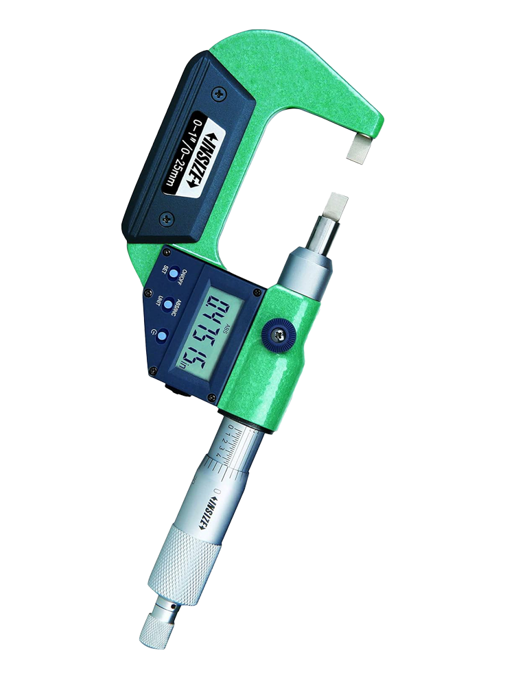
Herramientas
Micrómetro Digital
- Código:FAME-LMET-MD 091
Descripción:
Este instrumento también es denominado tornillo de Palmer, calibre Palmer o simplemente palmer, es un instrumento de medición cuyo nombre deriva etimológicamente de las palabras griegas (micros, 'pequeño') y (metron, 'medición').
Este instrumento de medición cuyo funcionamiento está basado en el tornillo micrométrico y que sirve para medir las dimensiones de un objeto con alta precisión, del orden de centésimas de milímetros (0,01 mm) y de milésimas de milímetros (0,001mm).
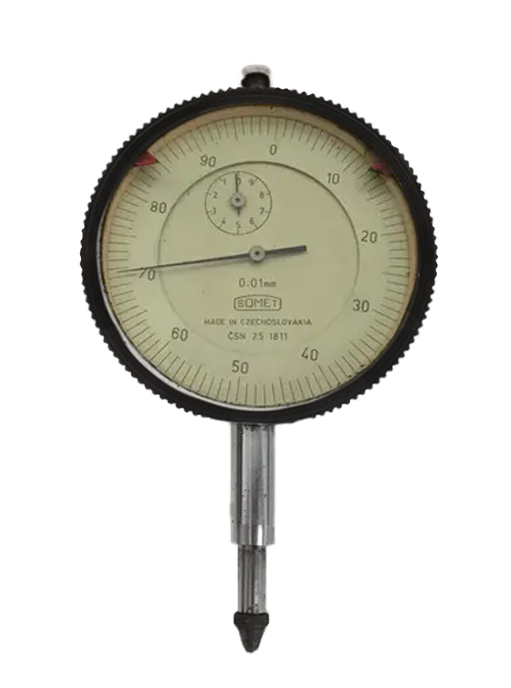
Herramientas
Reloj Comparador
- Código:FAME-LMET-RC101
Descripción:
Es un instrumento de medición de dimensiones que se utiliza para comparar cotas mediante la medición indirecta del desplazamiento de una punta de contacto esférica cuando el aparato está fijo en un soporte.
Consta de un mecanismo de engranajes que amplifica el movimiento del vástago en un movimiento circular de las agujas sobre escalas graduadas circulares que permiten obtener medidas con una precisión de centésimas o milésimas de milímetro (micras).
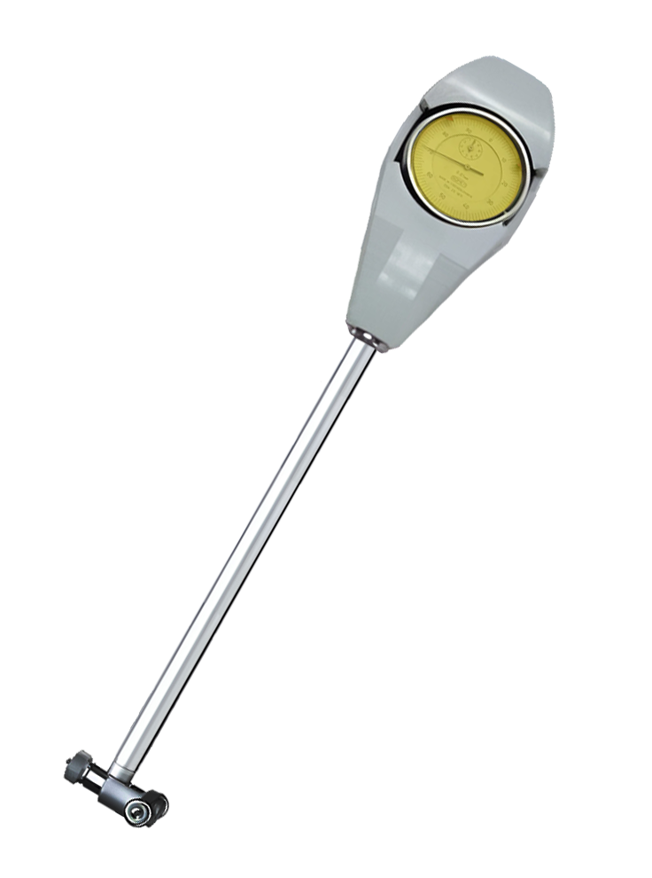
Herramientas
Medidor de Agujeros
- Código:FAME-LMET-MH 0104
Descripción:
Están diseñados para medir los diámetros de agujeros muy pequeños. El desplazamiento radial de la punta de bola se convierte en un desplazamiento axial de la barra de medición, la cual se muestra en el indicador de carátula.
Los indicadores de carátula y las cubiertas de protección están disponibles opcionalmente. Algunos indicadores y las cubiertas de protección no se pueden usar con estos medidores de agujeros.
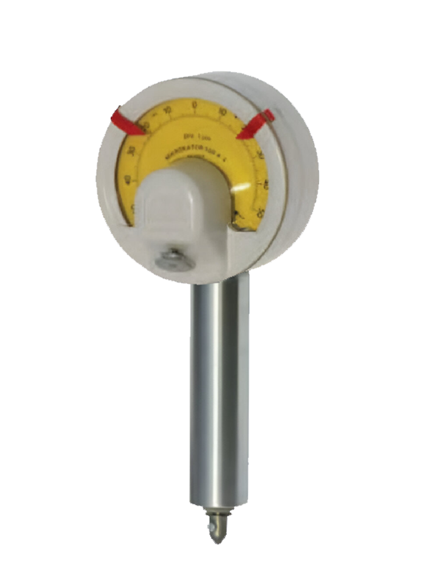
Herramientas
Rugosímetro Analógico
- Código:FAME-LMET-RA 113
Descripción:
El rugosímetro en superficies es un dispositivo pequeño, ligero con un manejo muy sencillo. A pesar de que el rugosímetro en superficies funciona a un nivel muy complejo y elaborado, los resultados de medición se pueden obtener de una manera muy fácil y cómoda. Gracias a su alta resistencia el rugosímetro en superficies tiene una larga vida útil. Es un medidor portátil para determinar, con un único dispositivo, la profundidad de rugosidad es un término de la física de superficie, que define la desigualdad de la superficie.
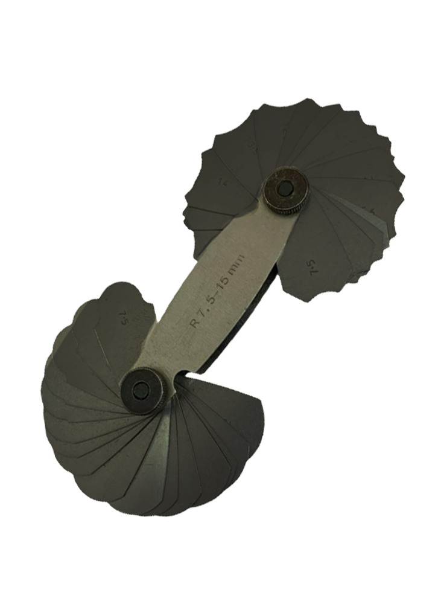
Herramientas
Galgas de Radios
- Código:FAME-LMET-GR0117
Descripción:
Se llama galga o calibre fijo o "feeler" a los elementos que se utilizan en el mecanizado de piezas para la verificación de las cotas con tolerancias estrechas cuando se trata de la verificación de piezas en serie. La galga también es una unidad de medida, ésta es utilizada para indicar el grosor (espesor) de materiales muy delgados o extremadamente finos; la galga se define como el grosor de un objeto expresado en micras multiplicado por 4.
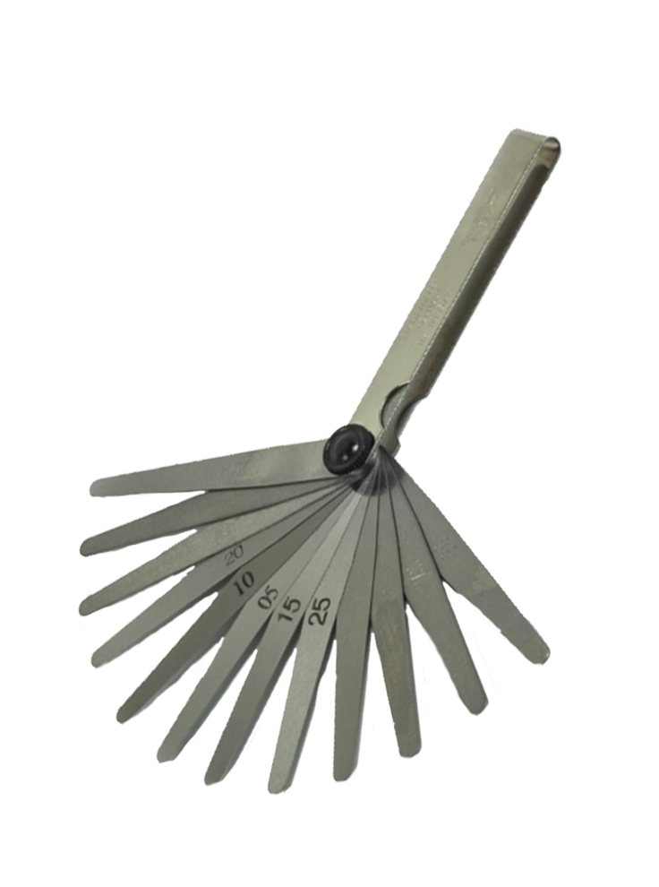
Herramientas
Galgas de Espesores
- Código:FAME-LMET-GE 124
Descripción:
Las galgas que son calibres fijos no siempre indican su medición y pueden ser meras réplicas de la pieza modelo, lo cual las abarata, así algunas sirven sólo para establecer un patrón, con el que se compara la pieza para establecer su validez; están formadas por un mango de sujeción y dos elementos de medida, donde una medida corresponde al valor máximo de la cota a medir, y se llama «NO PASA» (en inglés «NOT GO»), y la otra medida corresponde al valor mínimo de la cota a medir, y se llama «PASA» («GO»).
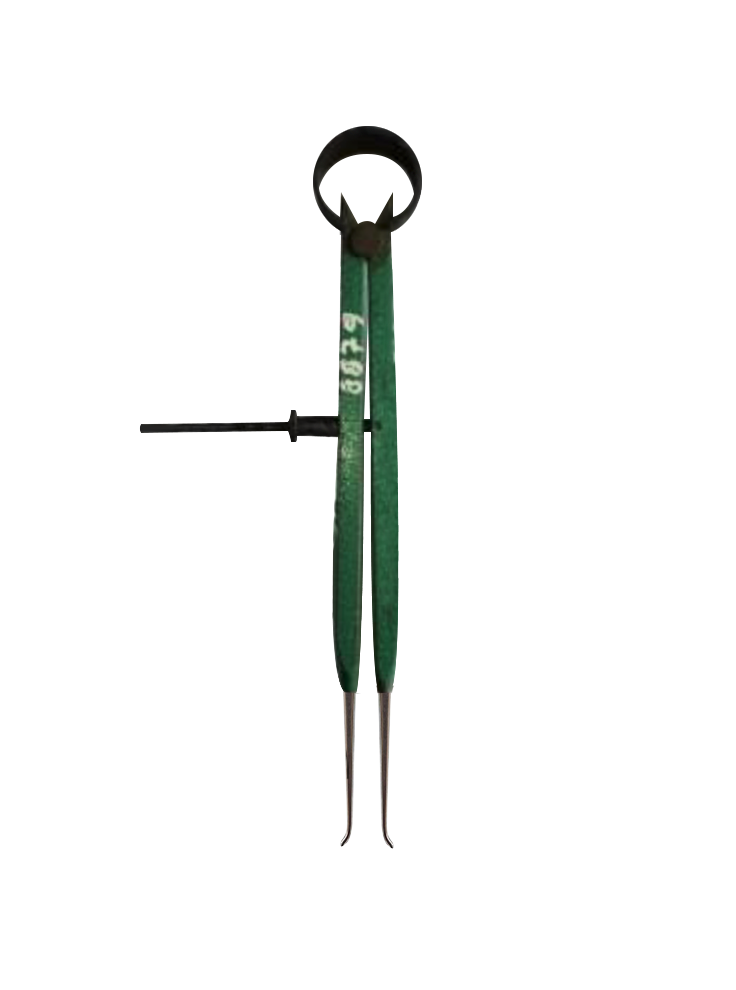
Herramientas
Compas para Interiores
- Código:FAME-LMET-CI 136
Descripción:
De la misma forma en que se utiliza el compás de exteriores en el maquinado de pieza tanto de madera como metálicas, el compás de interiores permite la verificación del torneado de piezas huecas de difícil acceso para un calibrador vernier.
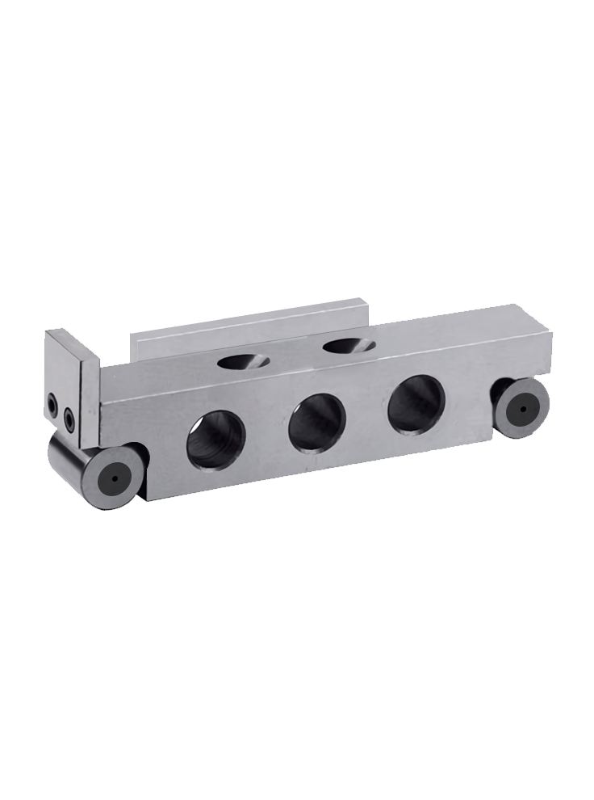
Herramientas
Regla Sinusoidal
- Código:FAME-LMET - RS 179
Descripción:
La regla sinusoidal está hecha de acero de aleación endurecido y sirve como un dispositivo de ajuste de ángulo basado en el principio de seno. El paralelismo es de 2.5 µm y la precisión es de 2 µm. La distancia del centro del rodillo es de 100/200 mm según el modelo. Se puede crear un plano de referencia de ángulo con una regla sinusal junto con bloques de calibre. Aquí debe trabajar con una placa de medición / placa Granti para lograr un rango de ajuste de 0-60 grados. Distancia de soporte 100 mm, paralelismo 2.5 µm, precisión 2 µm. Distancia de soporte 200 mm, paralelismo 2.5 µm, precisión 4 µm.
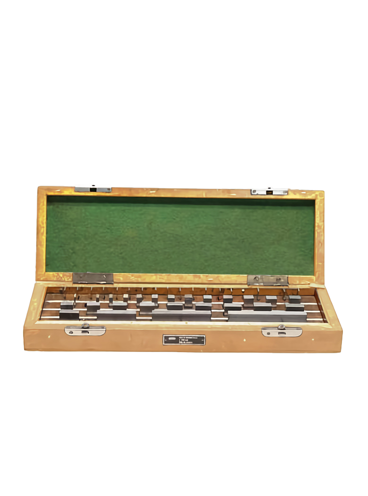
Herramientas
Bloques Patrón
- Código:FAME-LMET-BP 181
Descripción:
Los bloques patrón, calas o galgas patrón, bloques patrón longitudinales (BPL) o bloques Johansson -en honor a su inventor- son piezas macizas en forma de paralelepípedo, en las que dos de sus caras paralelas (o caras de medida) presentan un finísimo pulido especular que asegura excepcional paralelismo y planitud, pudiendo materializar una longitud determinada con elevada precisión.